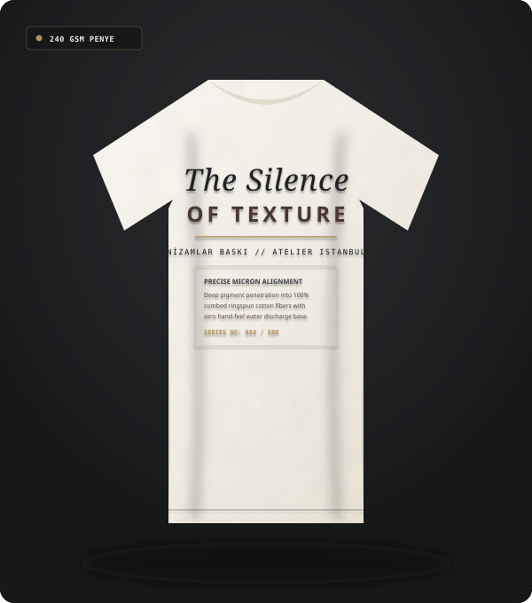

SIRT // BÜYÜK BOYUT

Büyük Sırt Baskılı Streetwear Tişört
Su Bazlı Nefes Alan İpek Serigrafi
Tekstil ihracatçıları, giyim markaları ve kurumsal firmalar için süprem kumaşlardan organik pamuğa uzanan kusursuz baskı uygulamaları.
Bir tişörtün üzerindeki baskının başarısı sadece görselin güzelliğiyle değil, kumaşın esnekliğiyle birlikte nefes alabilmesi ve ten üzerinde sertlik oluşturmamasıyla ölçülür.
Nizamlar Baskı olarak hem konfeksiyon aşamasındaki kesilmiş parça kumaşlara (ön beden, arka beden, kol, cep), hem de hazır dikilmiş tişört ve sweatshirt modellerine baskı yapabiliyoruz. Kumaşın gramajına (140 GSM hafif penyeden 320 GSM ağır 3 iplik şardonlu kumaşlara kadar) uygun boya ve fiksaj reçetesi oluşturuyoruz.
Ham 240 GSM penye pamuklu kumaş ile su bazlı serigrafi baskı sonrası kumaşın liflerine nüfuz eden renk doygunluğunu canlı karşılaştırın.
Sürgüyü kaydırarak kumaş üzerindeki mikro tram geçişlerini, pürüzsüz boya kenarlarını ve çatlama yapmayan elastik yapıyı inceleyin.

Her markanın tasarım diline uygun sırt, göğüs, minimal, oversize ve sanatsal renk geçişli baskı çözümleri.




Baskılı PET transfer filmi lazer hizalama kılavuzlarıyla tişört üzerine milimetrik yerleştirilir.
Teflon kaplı ısı tablası 160°C sıcaklık ve 5 bar pnömatik basınçla tişört üzerine kapanır.
15 saniyelik dijital geri sayım boyunca polimer tutkal pamuk liflerinin arasına eriyerek işler.
Süre bittiğinde emniyet pistonları devreye girer, pres otomatik açılır ve parça soğuma istasyonuna geçer.
Şeffaf taşıyıcı film tek hamlede soyularak kumaşla bütünleşen, esnek ve kalıcı baskılı ürün ortaya çıkar.
Özgün grafikler, vintage deşarj efektleri, büyük format sırt illüstrasyonları ve premium ense etiketleri.
Fabrika, lojistik, restoran ve mağaza personeli için dayanıklı polo yaka ve bisiklet yaka iş tişörtü baskıları.
Festival, maraton, kurumsal lansman ve fuar organizasyonları için yüksek adetli, bütçe dostu ve hızlı teslimatlı baskılar.